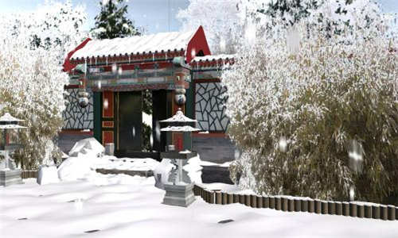
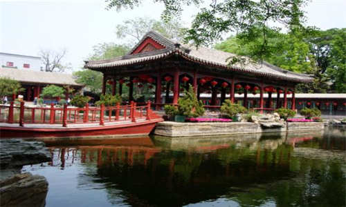
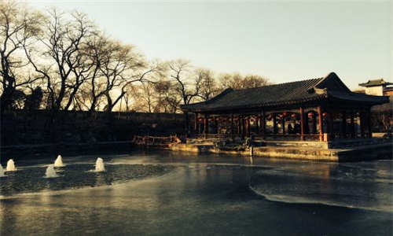
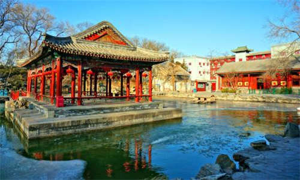
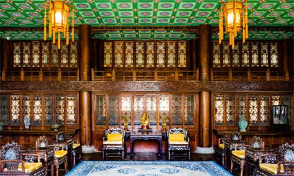
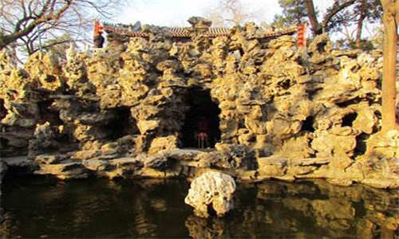

morly旅游网
恭王府花园为位于恭王府后的一独具特色的花园，又名萃锦园，位于柳荫街甲14号，建于1777年，据考证是在明代旧园上重修的。全园占地面积2.8万平方米，有古建筑31处。恭亲王为重建花园调集百名能工巧匠，增置山石林木，彩画斑斓，融江南园林艺术与北方建筑格局为一体，汇西洋建筑及中国古典园林建筑为一园，建成后曾为京师百座王府之冠，是北京现存王府园林艺术的精华所在，堪称“什刹海的明珠”。其中园中的西洋门、御书“福”字碑、室内大戏楼并称恭王府“三绝”。某些红学家认为此园可能是曹雪芹笔下《红楼梦》中大观园的原型。
恭王府花园又名萃锦园，南北长约150米，东西宽170余米，占地面积2.8万平方米。全园有古建筑31处，面积4800平方米。全园布局分中、东、西三路。
 中路
恭王府花园－滴翠岩， 建筑是花园主体。花园的正门与前部王府建筑由一过道相隔，是一座具有西洋建筑风格的汉白玉石拱门，处于花园中轴线的最南端。进门后“独乐峰”，是一块高5米余的太湖石，虽是园中点缀，但起着屏风的作用。过了独乐峰，正北是“海渡鹤桥”，过桥为“安善堂”。这是一座宽敞大厅，当时恭亲王在此设便宴招待客人。越过安善堂，来到“韵花鋎”。这是一排堂阁小屋，过此即是全园的主山“滴翠岩”。山上有平台名“邀月台”，额曰“绿天小隐”。山下有洞，曰“秘云洞”，著名的康熙“福字碑”即在洞中。中轴线的最后一组建筑是“倚松屏”和“蝠厅”。这里是消夏纳凉的好地方。
东路
恭王府花园－独乐峰， 东路的主要建筑是“大戏楼”，建筑面积685平方米，建筑形式是三券勾连搭全封闭式结构。厅内南边是高约一米的戏台、厅顶挂着宫灯，地面方砖铺就。这里除了演戏之外，还是当年恭王府中举办红白喜事的地方。大戏楼南为“怡神所”，是当年赏花行令之所。此外，“曲径通幽”、“吟香醉月”、“踨蔬圃”、“流怀亭”、“垂青樾”、“樵香经”等景点，均属东路范畴。
西路
西路的主要景观是“湖心亭”。这里以水面为主，中间有敞轩三间，是观赏、垂钓的好去处。水塘西岸有“凌倒影”，南岸有“浣云居”，北岸轩馆五间叫“花月玲珑”及“海棠轩”。南岸山上有一段城堡式墙垣，长约50米，雉堞、洞券俱全，石额书曰“榆关”，山径石碣书“翠云岭”。榆关东北有一座海棠式方亭，名“妙香亭”，二层八角式。西路中还有“雨者岭”、“养云精舍”、“山神庙”等景观。
 造园手法
恭王府花园在造园手法上既有中轴线，也有对称手法。全园分为中路、东路、西路三路，成多个院落。中轴上依次是园门、飞来峰、蝠池、安善堂、方池、假山、邀月台、绿天小隐、蝠厅。中路建筑和山水基本对称，东、西两路只是山体对称，建筑不对称。整个园林由六条山龙围合：南面、东面、西面各有两山，中路后部有一山为中龙。
东路以建筑为主。东有两山南北奔趋，两山各在东南和东北转折成围合状。建筑分三个小院。，南面靠东院入，抬头是一精致垂花门，入内为狭长院落，院内当年种竹，正厅为大戏楼之后部，西厢为中路明道堂之后卷，东厢为一排厢房，院西为另一个狭长院落。入口月洞门，曰：吟香醉月。北面是东路的主体建筑大戏楼，戏楼自成一个小院，面积达685平方米，院内有前厅、观众厅、舞台、扮戏房等，厅内装饰豪华，是王府的观戏处。
西路以山水为主。西路的起始部分从飞来峰西走，在南端是两山之间的一个雄关。关名曰：榆关，榆关即长城的山海关，是长城的象征，素有天下第一关之美称，当年，清代皇帝就是从此入关，在园中设此关足以表示园主不忘记清祖从山海关入主中原的丰功伟绩。榆关之前是西路的中心大方池，方池东南角出细流折东与福河相连，大方池之中有一个方形小岛，岛上是观鱼台，以此来喻庄子濠上观鱼之乐的典故；池西是西山；池前有五间堂屋。东出抄手廊与中路滴翠岩的曲廊相接。
全园以福字贯穿，表明主题明显。山势围合有新意，榆关雄峙也有新意，但东部建筑较多，中部曲廊的围合也不够有机，特别是理水较差。从堆石、建筑、植物、格局上看仍有北方园林特点。
 三进院落
园林入口在中路，中路分三进院落。园门为晚清流行的西洋式拱券门。门额由恭亲王手书“萃锦园”三字。入园迎面为左右两青石假山夹道，之间有一空地。立此上看，则额：曲径通幽；左看，则曰：垂青樾；右看，则曰：翠云岭。据此，方觉此地非凡，有如入神仙洞府一般。过夹道，见前面有立石如壁，曰：飞来峰。飞来峰东有一小亭依附于山脚，曰沁秋亭，亭内做成流杯渠，文人墨客于此可做曲水流觞游戏，它是兰亭情结的延续。
过飞来峰，就是中路第一进院落。这一院落是一个三合院。 前面一个水池，水源来自西路的大方池。此院水池做成一只向前飞舞的蝴蝶平面，取“蝴”的谐音“福”，而名为福河。福河上原有渡鹤桥。载滢诗《补题邸园二十景》称“长桥卧波，四顾浩如。”三合院主体建筑安善堂为面阔五间带前后抱厦的建筑。安善堂东西出抄手廊，廊折面向南，成东西两厢。东厢名：明道堂。西厢名：棣华轩。
过安善堂，进入第二进院落。此院落是一个四合院。正前方是高耸一石山名滴翠岩。山系太湖石构。山上一厅，面阔三间，名曰：绿天小隐。厅前有一台，曰：邀月台。中秋望月，此景堪称第一。厅东西接廊，转而南下，续第一进曲廊。中接东西两厢，东曰：韵花簃。簃即为堂边小屋。在苏州网师园有殿春簃，表示晚春之屋。韵花簃即是看花听曲之屋。滴翠岩下，有石洞，名：秘云。内嵌康熙手书“福”字石刻。有水从洞中流出，在滴翠岩前积成一湾。昔日，恭亲王之子载滢有道：“岩以太湖石为之，叠壁谺谺，不可具状。复凿池其下，每风幽山静，暮雨初来，则藓迹云根，空翠欲滴，吟啸徘徊，觉世俗尘气为之一息。”
过滴翠岩，则为中轴线最后一进院落。院落终点是蝠厅。因建筑正厅五间，前后出抱厦三间。两侧又出耳房，耳房比正厅略前，形成曲折对称类似蝙蝠的平面。故名蝠厅。也是以蝠喻福。到此，可见全园有三福，各据一院。前院福河，中院福字，后院福厅。这与建福宫花园、乾隆花园之祈福是一致的。《尚书·洪范》五福之说：“一曰寿，二曰富，三曰康宁，四曰攸好德，五曰考终命。”不仅皇帝求福，就是平民也在求福。
内容整理至网络，如有侵权，请联系我们！1255394075@qq.com